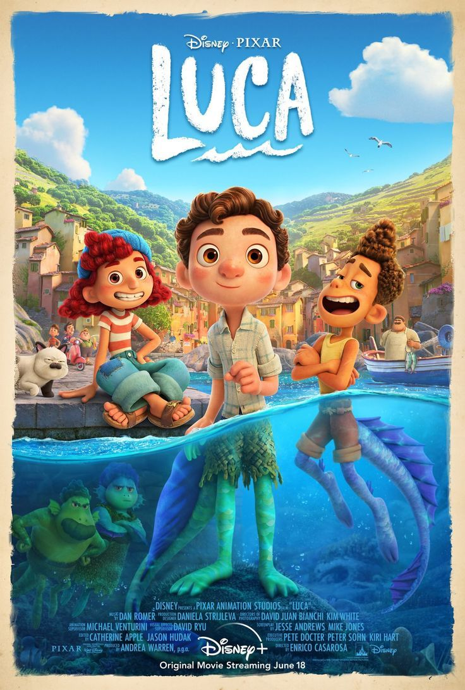
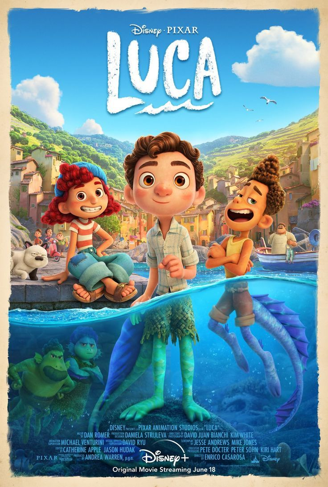

Pixar Animation Studios, atau hanya Pixar, adalah sebuah studio animasi komputer Amerika Serikat yang berpusat di Emeryville, California. Studio ini terkenal karena CGI-film animasi yang dibuat dengan Pixar RenderMan, implementasi sendiri dari industri RenderMan Interface Specification - rekacitra gambar antarmuka pemrograman aplikasi yang digunakan untuk menghasilkan gambar berkualitas tinggi. Pixar dimulai pada tahun 1979 sebagai Graphics Group, bagian dari divisi komputer Lucasfilm sebelumnya keluar sebagai sebuah perusahaan pada tahun 1986 yang dibiayai oleh Apple Inc.
Beberapa film dari pixar:

 
